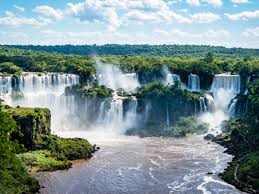
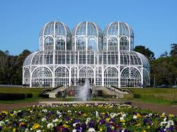
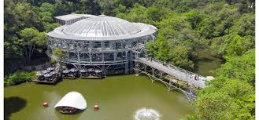

Cataratas do Iguaçu
As Cataratas do Iguaçu são uma das 7 maravilhas naturais do mundo, localizadas em Foz do Iguaçu, na fronteira com a Argentina.
Jardim Botânico de Curitiba
Um dos cartões-postais de Curitiba, o Jardim Botânico é famoso por sua estufa de vidro em estilo art nouveau.
Ópera de Arame
Construída em estrutura metálica e coberta por vidro transparente, a Ópera de Arame é um dos teatros mais bonitos do Brasil.